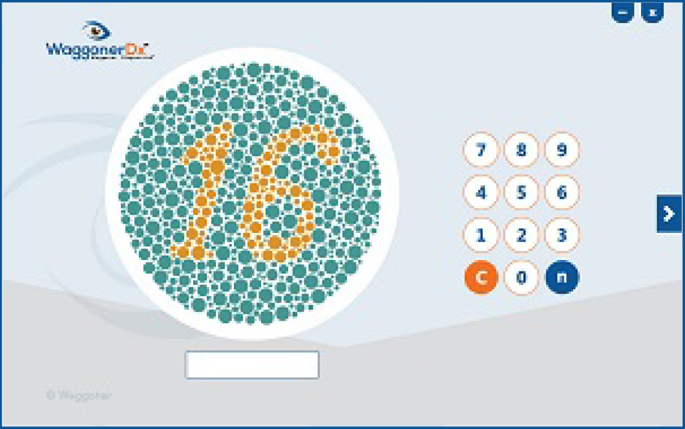

Starting the test

- Position your eyes approximately arms length away from the monitor.
- From your line of sight, make sure the test plates are at a 90° angle.
- You have ## seconds to view each test plate before it disappears.
- As mentioned above, the test plate will disappear but you still have ## seconds to answer.
- Enter the number on the test plate, if there is one, using the number pad on the screen or the keyboard.
- Selecting "С" clears the current answer and selecting "n" represents the answer nothing.
- After entering the answer, select either the enter (return) key or select the arrow on the monitor.
- The first test plate will be a demonstration plate with the number 16. Select the arrow to begin.